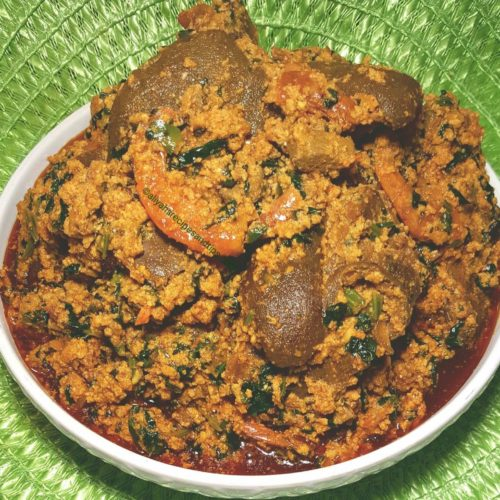
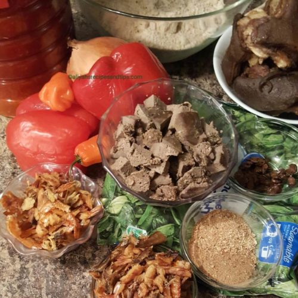
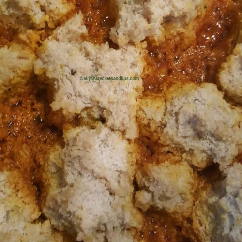
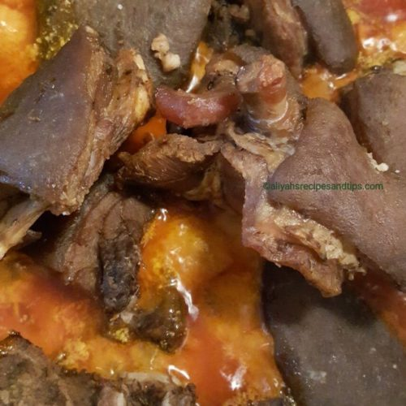
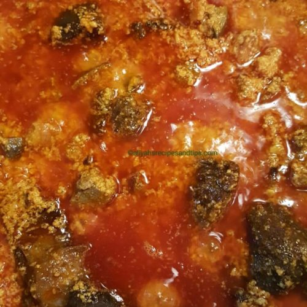
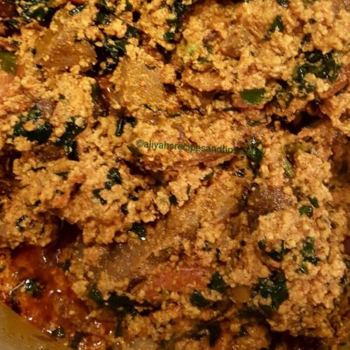

Egusi recipes

Egusi Recipes (frying method)
It is another egusi soup episode today but egusi soup (frying method) this method involves frying if you
like your egusi fried then this is for you. Egusi soup is one of the Nigerian favorite soup, you can use
different
forms; boiling, frying, with oil, without oil, with vegetables or without vegetables.
So, for this egusi soup (frying method) you'll need more oil than usual compared to the other method
if you don't like too much oil you can scoop the oil out when you're done and use it in another time.
INGREDIENTS
- 2.5 Cups Egusi (toasted and blended)
- Precooked meat (your choice of proteins)
- peppers
- 2 Rodo (adjust to your preference)
- 1 Cup Spinach (or vegetable of your choice)
- Onions (divided)
- 1 Tablespoon Iru/locust beans
- 1 cup mixture of shredded dried shrimps and fish (soaked in hot water
- 2 Tablespoons grounded fish and crayfish
- ¾ Cup Diced cooked liver
- 1 Cup Palm oil (or more)
- Seasoning powder/cubes
- Salt to taste
Instructions
- If you're using uncooked meat, clean and boi, with onion, seasoning powder, garlic,
seasoning/spices of your choice, salt to taste. Cook until soft, you can fry, or roast
a little bit in the oven, or use as it is. Save some of the meat stock. Add the dried s
hrimps and fish in a bowl of hot water and salt for a few minutes, remove all the dirt, rinse and
set and set aside.

- Heat oil in a large pan over medium heat and sauté one sliced onion until soft, add half of
the
ground crayfish and fish (you can use just ground crayfish), iru and fry for a few
seconds. Make
sure it's not burned or better still add the iru later.
- In a bowl, add the blended roasted egusi (melon) then add the remaining ground crayfish mixture,
grated ½ onion,
small quantity of water/stock and combine make sure it's thick if you need
to add more liquid
make
sure you
don't add too much at the same time if you mistakenly add more than you needed then add more egusi
to absorb the liquid.
- Use your fingers to scoop small balls of egusi mixture and add to the frying onion and fry on low
heat
(if you use high heat it will burn so also is the locust beans) do not stir.

- After the egusi has absorbed the oil, stir and continue to fry for about 10 minutes stir as you
fry to avoid burning fry until you're satisfied, you'll see the difference when it is well fried.
- While the egusi is frying clean the pepper and blend with the remaining onion to smooth until
smooth.
When egusi has fried to how you want it, add the blended pepper, cooked diced liver, and the
cleaned dried fish
and shrimps, add about one cup of meat stock/water combine, cover and cook until fully cooked.
- Add the meat, season with salt and seasoning powder/cube (be gentle with the seasoning because the
meat was already seasoned) combine and continue to cook until the meat absorbs the egusi
mixture.
While waiting for the meat to absorb the soup, thaw the spinach (if you;re using frozen) squeeze out
the excess water, if you're using fresh vegetable, cut and rinse, then drain in a strainer.

- You'll notice the oil has floated over the egusi soup. It can be eaten as it is or you can
continue
to add vegetables.

- Add the vegetable to the egusi mixture, check the seasoning and readjust if necessary.
Cook further for about 3 minutes

serve